English Breakfast ... ?
六月廿五日 Piccadilly Circus，British
Museum，Big Ben，London Eye
六月廿六日 Winchester，Stonehenge，Bath
六月廿七日 Windsor Castle，St. Paul Cathedral and
Tower Bridge
六月廿八日 Buckingham Palace，Les Miserables，Billy
Elliot
六月廿九日 Greenwich，National History
Museum，Birmingham
六月三十日 Lake District - Windermere，Ambleside
七月一日 Rydal
Water，Honister Pass，Ullswater，Kirkstone Pass
七月二日 Wrynose
Pass，Hardknott Pass，steam train，Wast Water，Barrow
七月三日 Shakespeare's
birthplace
七月四日
eurostar，Paris，Tower Eiffel
七月五日 Notre Dame in
Paris，Louvre Museum，Before Sunset，World Cup
七月六日
凱旋門，Mont-Saint-Michel
七月七日
Mont-Saint-Michel，Pontarson
七月八日 最後一天
六月廿五日 晴
Piccadilly Circus，British Museum，Big Ben，London Eye
坐了約十二小時的飛機，到達London的Heathrow
Airport，是當地時間早上五時多，天已經光透。意外地，很容易過關入境，領回大背包便上路。原本以為要坐很貴的Heathrow
Express，幸好當地的職員都很老實，說我根本沒有需要，只要坐普通的tube便行。Tube即是地下鐵路的意思。由於我誤會了星期天沒有one day
travel ticket，一開始便買single ticket 坐 tube 到我酒店的所在地Bayswater。差不多用了一小時才到達。
所謂的酒店並不是我所想的，若以平時參加旅行團那種四五星級酒店相比，我入住的，應該是一二星級吧。不過，當地酒店一晚價錢貴得驚人，以我package包的價錢，也很合理。想不到，一到步便收到壞消息，該酒店接待員說我的booking早已被他們reject了，叫我自己聯絡agent，說該agent不應該這樣做。我也知道，但我不懂我能做什麼，便問他還有沒有房，不知是他太好人，還是我太可憐，他竟然說不想我有麻煩，可以給我一間房，而且還不收我錢。
放下行李，去Piccadilly Circus 的遊客中心，怎料太早未開門，我唯有到處逛，反正日後要去的Queens Theatre
就在附近，便先去探路。那條街道，有約四間劇院，每間都上演不同的音樂劇。再遠的地方，有寫著China Town方向牌。時間差不多，在街邊一間店試一個Full
English Breakfast，塊煙肉好難吃。
去遊客中心途中，竟然有個中國人問我：老兄，請問唐人街在那裡？想不到我剛到步會被人問路而我剛好又知唐人街的方向……在遊客中心領取London Pass 和
Travel Cards ，便去British Museum。
好大的British Museum，我想若果要用心看，可以用我一天時間，結果選擇地看，亦行了我四個多小時，腳已很累，吃了點東西後，便去趕在日落前到London
Eye。
當地日照時間十分長，七時還是天光光的，去到Waterloo車站附近，逛一逛Big Ben 和附近的建築物，見天開始轉暗，便去London
Eye。十分多人排隊，London Eye 轉得慢，可以細心欣賞遠方的風景，看見好宏大的Waterloo 和 Victoria
火車站，遠處奇特的建築，以及River Thames。
夜了，累了，便回酒店。
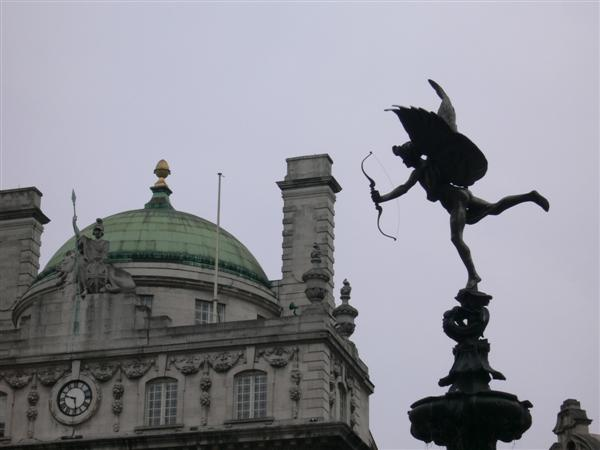
Piccadilly Circus
English Breakfast ... ?

千年女王的飛船？
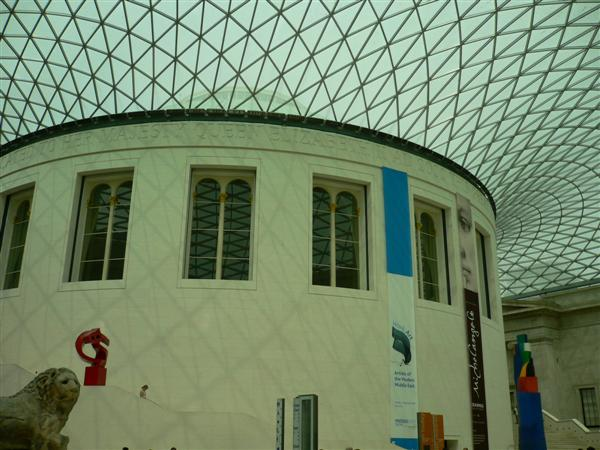
British Museum
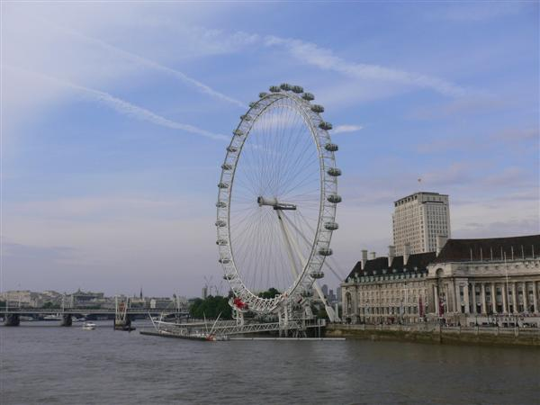
British Airways London Eye

Big Ben
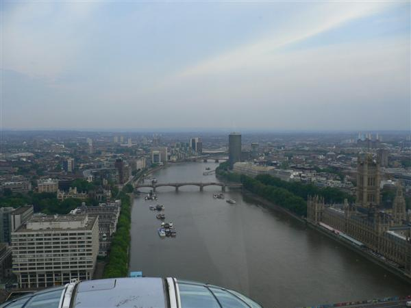
River Thames
六月廿六日 雨
Winchester，Stonehenge，Bath
參加當地旅行團，該團有幾位日本人，導遊先生講解時都會用日語和英語說一遍。
雨越來越大，旅遊巴到達Winchester時，已很大雨，下雨會令天氣變得好冷，只有攝氏十三度，我只有一件T和風衣，冷得好緊要。參觀完一間教堂和附近的街道，便急不及待去喝一杯熱朱古力。
很快地，鴨仔團的鴨仔回到車裡，起行去Stonehenge了，這是我其中一個最想去的地方，我知道，只有石頭一堆。但我好想親眼看，加上導遊和小冊子的講解，知道這塊石是什麼，這條坑有什麼用。雖然下雨，但也好美，五千年前的東西，附近更有奇怪圖案草原，若能在高處看便好了。(幾天後看地圖，知道原來Stonehenge
附近有個 Woodhenge！)
下午便是參觀倫敦以西更遠的Bath了，港督彭定康的故鄉，當然是見不到肥彭的。二時到達，導遊說時間緊迫，半小時後參觀Roman
Baths，接著四時離開，預計七時回到倫敦。心知不妙，果然是鴨仔得好緊要，急忙去找我想看的Pulteney Bridge，然後再去看Bath Abbey。
Roman Baths 是個古蹟，是以前建的澡堂，內有由地下湧上來的熱水，到今天還是不斷地滲出。古蹟保留了部分引水道和一些重要的結構，都幾得意。
回倫敦的車程，果然要三小時，導遊笑說，終於停雨了。
回酒店前行行超市，那裡的東西便宜得多了。
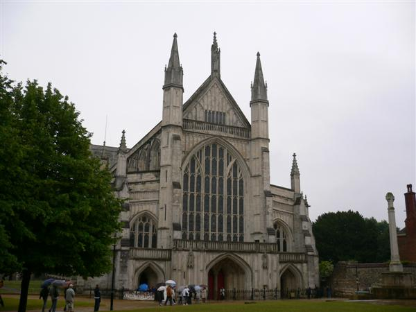
Winchester Cathedral
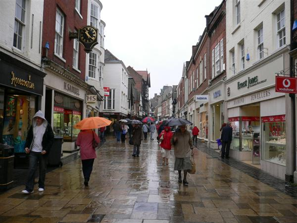
Winchester
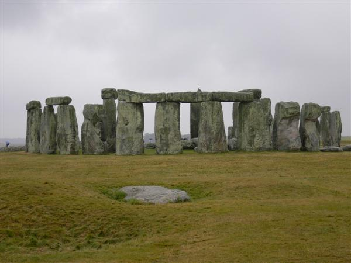
Stonehenge

Pulteney Bridge

Bath Abbey

天使在爬梯

Roman Baths
六月廿七日 陰
Windsor Castle，St. Paul Cathedral and Tower Bridge
離開酒店，搬到只隔一條街的Hostel，放下行李。
由Paddington 乘火車，在Slough轉車到Windsor Castle，跟著audio guide 去參觀，不經不覺便到中午。堡內有個Queen
Mary's Dolls' House，有很多很精緻的手工和收藏品。看Windsor Castle
感覺很有趣，因為那裡的城和圖案，都在小時候出產的Lego出現，附近亦有個Legoland Windsor，不過沒有去。
下一站是St. Paul Cathedral，未去到之前以為會很快便走，怎料原來有東西玩。玩什麼？玩行樓梯。行共五百多級。先從底層行二百多級到The
Whispering Gallery，在這裡可以由高處看大教堂的內部，實在是很大的教堂。再行百多級到The Stone
Gallery，可以由教堂外看倫敦的遠境，又再上多百多級到The Golden
Gallery，途中要穿過一個很窄小的四方形入口，很有趣。上到去的話，便能再高一點看倫敦，這裡有八十多米高。
時間剛剛好，去Tower Bridge，那裡的職員都很有趣，守著升降機的一位全程和遊客開玩笑。那裡有個展覽，介紹該條橋如何開關讓船駛過，如何令橋的開關較省力，又有些實驗給人玩，像上科學課。有部機器，可以把一個便士硬幣重新壓為一個紀念品，當時我身上沒有，幸好有個小姐給了我一個便士。
晚上一試Fish and Chips，很大碟。回Hostel，我的同房有Max和他的妹妹，看他們很多的行李，應該是去很多天，還帶著一些厚厚的書，有Crime
and Punish，嘩……他們很早睡，正合我意。

換班

Windsor Castle 內

由St. Paul Cathedral上面看下去

St. Paul Cathedral

Tower Bridge

戰艦內也有展覽
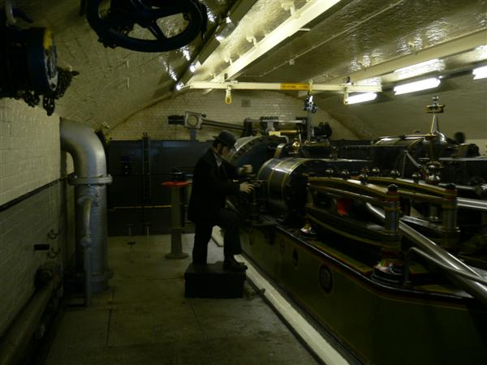
Tower Bridge Exhibtion
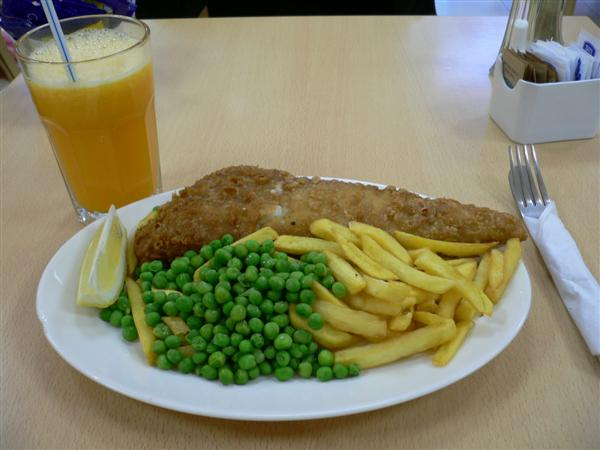
fish and chips
六月廿八日 陽光普照
Buckingham Palace，Les Miserables，Billy Elliot
在旅舍吃早餐，和同檯的陌生人聊，感覺好新鮮。
Max兄妹要離開旅舍了。告別後，我便在附近逛，因為今天行程不趕急，而且為了省錢，等到九時半才買off-peak ticket……
這樣子令我有時間去看看Bayswater這個地方。我發現，這是個好地方。有超市，商場，戲院，餐廳，雜貨店，銀行……對了，香港銀行竟然換了一些不通行的英鎊給我，就趁這時候去兌換店換了它們。位置亦是很好，五分鐘內便到達Bayswater
Station 和Queensway Station，乘Circle line 和Central line去各地是極之方便的。
時間很鬆動，即興去看看London Bridge是怎樣。經過London Bridge is falling
down…幾番摧毀後的倫敦橋，現在是一條外表普通的橋。
到達Green Park，穿過它便是Buckingham
Palace，十時四十五分，已經有大堆人在等候，這時候竟然烈日當空。乾煎到差不多時候，有騎警到場了，騎警是騎馬的警，他們負責看看有沒有人過界，有沒有人站或坐在不適當的位置，有的話，會吹BB，然後手指指。
各路軍隊從遠處奏樂，沿馬路操進來，儀式快要開始。首先從兩邊的閘口進入，然後進行儀式，奏樂。意外地，奏的其中有YMCA這首歌的音樂，這時候，部分遊客隨音樂做手勢。士兵從中間的閘口出來，離開後便散場了。
Do you hear the people sing？
下午便到Piccadilly Circus 的Queens Theatre看Les
Miserables。終於都一償所願看了，雖然以劇來說並不是好，後半部更是冗長，幸好有我喜歡和熟悉的音樂歌曲，加上舞台旋轉設計，令換場流暢和增加動感，部分場境效果很好。Queens
Theatre有近百年歷史，不是大型劇院，內部裝潢很有特色，天花更有圖案。
晚上，在Victoria的Victoria Palace Theatre看Billy Elliot The Musical。
這是新的音樂劇，電影版的writer Lee Hall寫詞，Elton
John負責音樂，原來他看過電影版看到哭，因為他和主角小時候的遭遇差不多，所以他有很深感觸。
Billy
Elliot真是十分精彩，我好喜歡，比電影版，加入了當時社會的背景：miners和政府的衝突。音樂、歌、舞和劇情配合和編排得好出色，我最愛是Solidarity、Dear
Billy、Billy與長大後的他一起跳的那部分和Electricity。值得有機會再看。
Victoria Palace
Theatre是大型劇院，也是很有特色，經營了百多年，椅子都殘舊了。驚喜地，在場中，見到一角坐著一個很面熟的人，是今早在旅舍的breakfast
room見到的一個女子Jessica，上前打招呼，她也是一個人遊英國，也喜歡看音樂劇，完場一起回去，途中聊聊剛才怎樣怎樣。
One Day More
這晚，房中來了馬來西亞的Jake，原來他翌日去見工。所以回到去便睡了。他並不是住在馬來西亞，是住在一個冬天有時會跌到零下十多度的地方，他說他覺得這裡很熱，我卻覺得氣溫好舒服，我笑他習慣了寒冷的天氣。
然後又來了兩位女子，她們第二朝一早便要走，告訴我們可能會很早被吵醒，大家都很有商量。事實上，我這段時間，是跟日光醒的，每天五時多便醒了。但很奇怪，一點也不累。
還有一天，便離開這裡了。
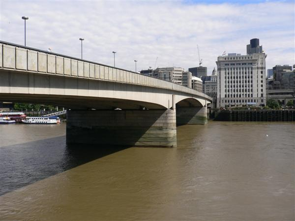
London Bridge
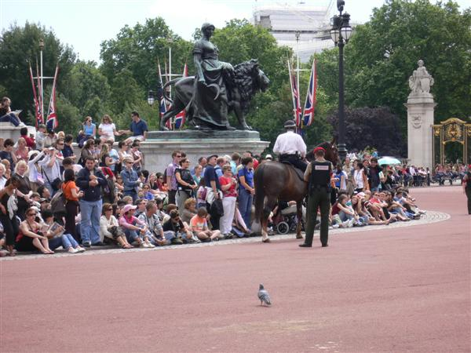
騎警：BB！你幾個！同我落番o黎！唔准坐上去！
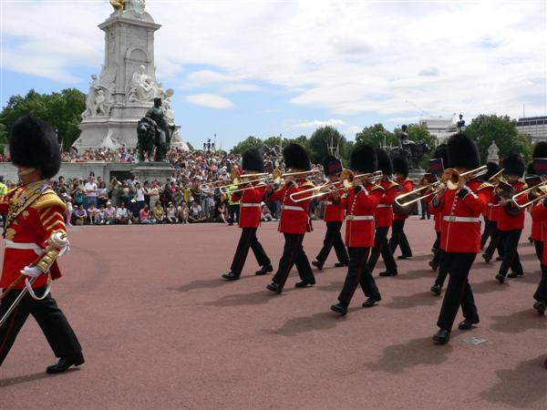
換班
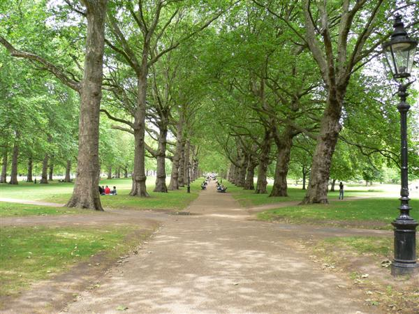
Green Park
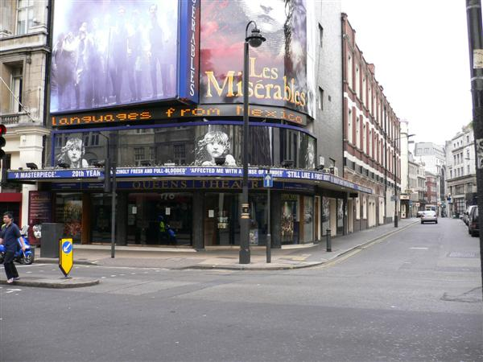
Queens Theatre
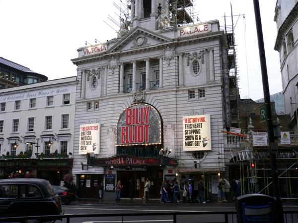
Victoria Palace Theatre
六月廿九日 晴
Greenwich，National History Museum，Birmingham
早上遊Greenwich，到National Maritime
Museum看，很多航海的資料，大小船隻的模型，不同的船頭像，各種儀器等。一行便用了很多時間。之後，經過著名的The Cutty
Sark，沒有上船，便走去行一行Thames底的行人隧道。
離開Greenwich回市中心，還沒有多少時間，趕著去Natural History
Museum，怎料中途在tube錯過了一個車站，但就因為這樣，我在另一個站的隧道聽到有人奏電子結他。在tube的行人隧道，有人奏樂賣藝是很平常，但這次的結他音樂很有感覺，尤其當我在那條長隧道行走的時候，結果我掉頭再行過，去到那個人那裡，買了他自己創作和錄製的CD。
到Natural History
Museum，這又是一座舊建築物改成的博物館。很大。原本看小冊子，恐龍的展覽還未到期開始的，但一進場，見到有恐龍骨，又有部分恐龍開始展覽了，有點後悔用得太多時間在Greenwich，但已沒辦法，未看夠便要走了。
回宿舍取回行李，便離開Bayswater了，到Euston車站，乘火車去Birmingham。大鄉里出城，在車站見到那些手堆車仔，但不懂用，但個職員很熱心幫我，原來要入個一鎊至用得。
火車只用一個多小時便到達Birmingham，晚上六時多，等了一會，終於在約定的地方見到老朋友張五俠了！
阿五俠是我舊同學，今次遊英國本想探探她，不料她好人到說可以帶我去玩幾天。張小姐仍是癲癲地，氣慨不遜男孩子，手車驚嚇我個心，泊車一野打斜插入去就算。所以，就算她說遊湖區未必成功過到那個什麼斜坡，我也不擔心，應該說：都唔驚得咁多。
逛了Birmingham的市中心。這裡有點特別是，會有些不協調的藝術品放在街上。個市很現代化，這裡也有一間劇院，也很新式，從外面看像香港的戲院。
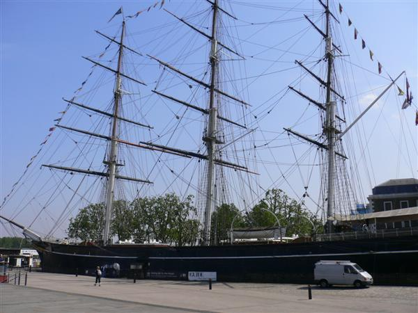
The Cutty Sark
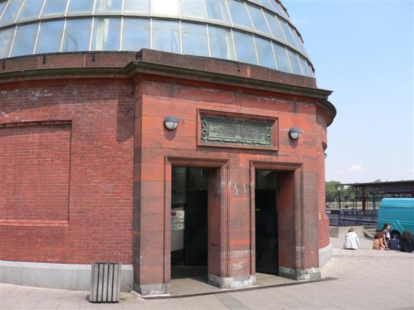
Thames河底行人隧道出入口

隧道內比地面冷
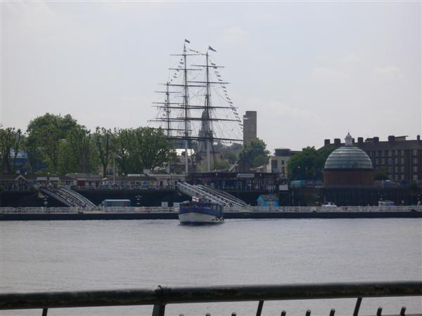
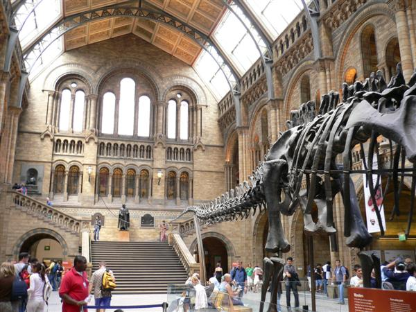
Natural History Museum
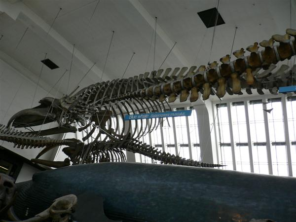
鯨魚骨
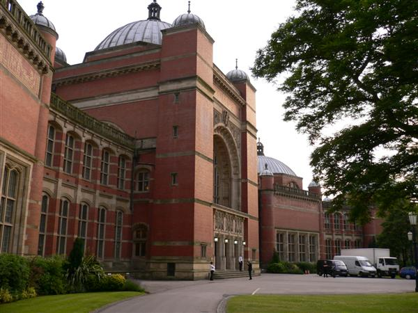
University of Birmingham
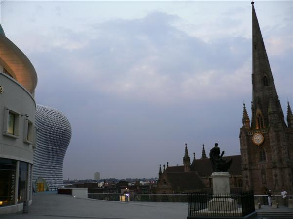
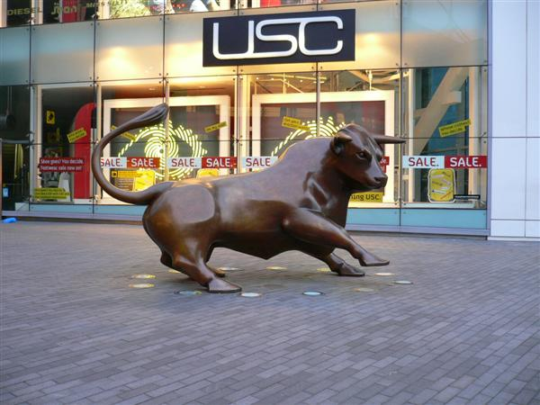
Bull Ring
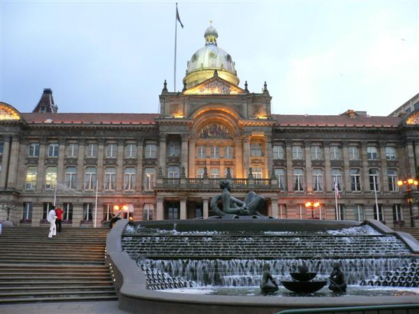
六月三十日 時晴時陰
Lake District – Windermere，Ambleside
車子由Birmingham到Windermere要很久，在中途站吃早餐，個早餐樣樣都是炸，吃到我已不想再吃這種早餐。到達入住的B&B已是中午十二時。到遊客中心買了本lap
map，取了些資料。
在附近逛逛，在最大的湖Lake
Windermere有得玩船仔，選了中價錢那種玩。駕船出湖，小時候在中國七星岩玩過，但那時候不是自己控制隻船。遊呀遊，回程的時候，怎麼越來越慢的？竟然在湖中心停了，不知什麼事，幸好有隻小船走過來，扶著我們免得在隨處飄，原來他們是義工，正在看守著另一隻傷殘人士坐的船。
等人來拖船的時候，已經是第二次有空軍戰機經過上空，還要是低飛，十分吵和嚇人。有人拖我們回去了，沒得玩泊船，可惡！埋岸時苦瓜乾，職員檢查完油箱，便問我們想再玩多次還是退錢，便選了退錢。多數是沒油啦，事後心想有得免費玩都幾好。
吃點茶點後，還有幾小時，便跟著lap
map的tour去遊了。作為乘客，對著本地圖指示方向原來很難，但又幾好玩。雖然有時行錯了路，但都沒所謂，總算完成幾個景點，有時，去到那些景點，反而不及得上途經時偶爾看見的一些好看。
晚上，在Ambleside吃，逛了一會，便回去了。
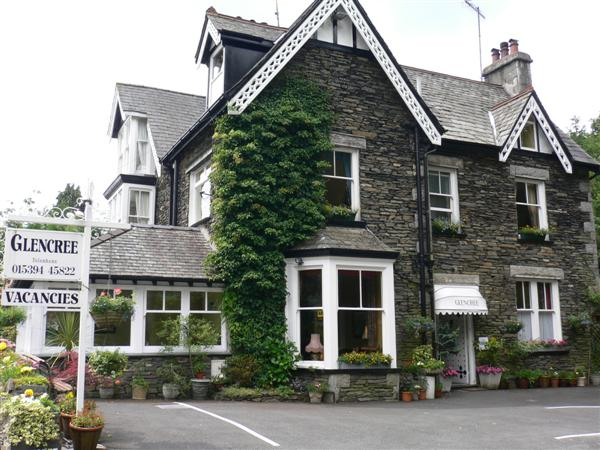
B&B
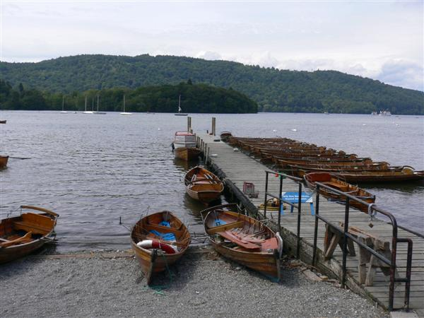

天鵝，受保護動物
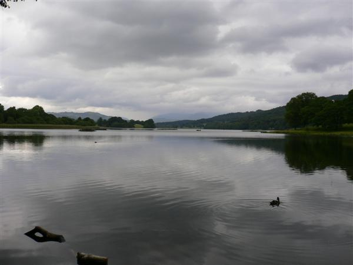
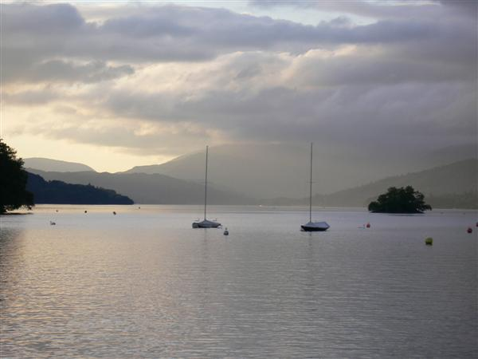
七月一日 晴
Rydal Water，Honister Pass，Ullswater，Kirkstone Pass
因為之前被那些成口油早餐和像牛肉乾般的煙肉嚇怕了，所以早餐叫屋主整個omelet吃算了，吃過後，又跟著lap map出發。
第一個經過的湖是Rydal
Water，第一眼看，平靜如鏡，這時候是最好看的，便停車行去湖邊，途中有人說附近有個洞很好看，便去看看，洞的洞底有個水池，有很多小魚。在這裡行了很久，然而，再次看湖的時候，已經有風了，不再是平靜時好看。
經過幾個湖Grasmere、Thirlmere、Derwent Water和幾條小村落之後，經過一個斜路Honister Pass，這裡有個石礦場，這些石頭應該就是平時在牧場用來搭石牆那種，有個訪客中心和Stone Garden，出售用那些石頭做材料的精品。
然後在Buttermere
Village吃東西，有自製的雪糕。到這裡才是去了一半的路，不過，之後的都沒有什麼景，直至很久之後，到達一個大點的湖Ullswater，再經過一個過佐都唔覺的Kirkstone
Pass，便完結了。
司機已經累死了，早點吃晚飯回去了。
這晚是世界杯英格蘭對葡萄牙，見到Bar內堆滿了人大叫。
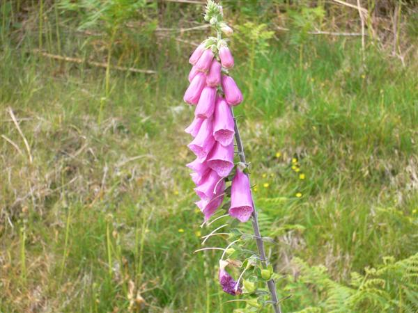
foxglove
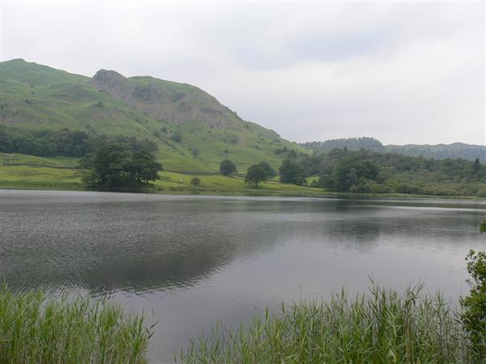
Rydal Water
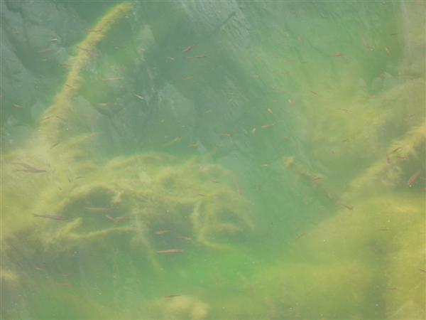
山洞中的水池
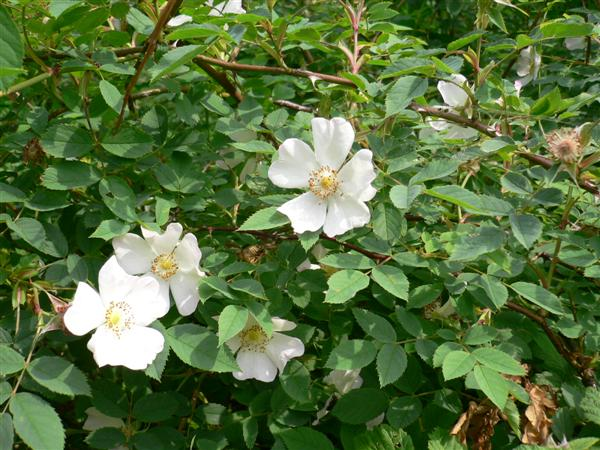
英國玫瑰
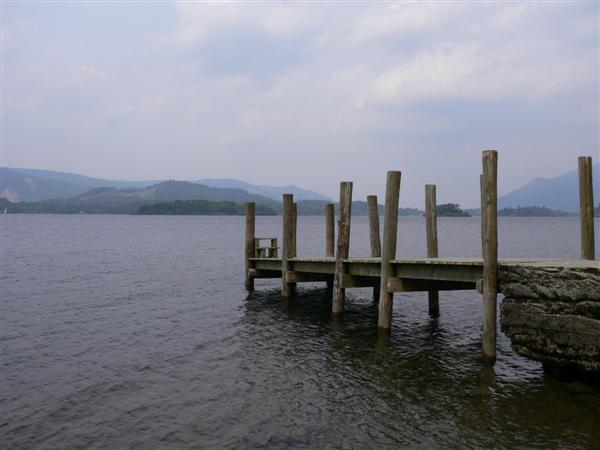
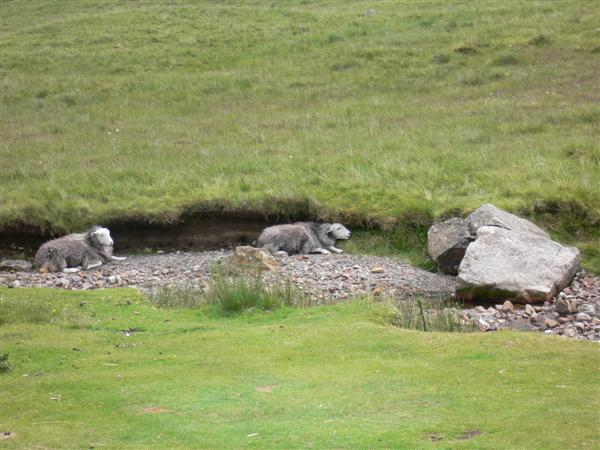
綿羊也覺曬了
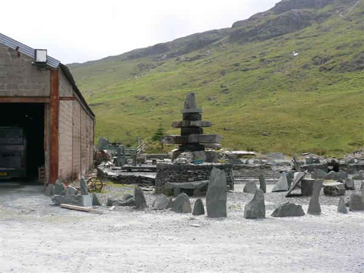
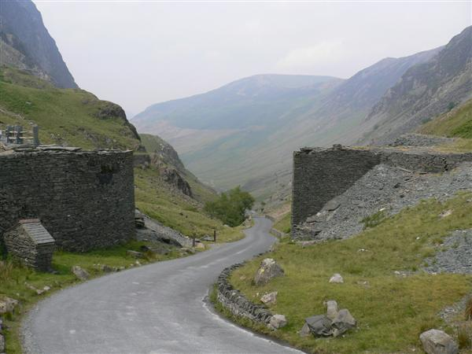

七月二日 烈日當空
Wrynose Pass，Hardknott Pass，steam train，Wast Water，Barrow
再吃英式早餐，想不到終於吃到正常的了，不是炸的，好好吃。
英格蘭輸了，街上似乎靜了。
有點期待，因為會上英國第二斜的路Hardknott Pass。先落Wrynose Pass，都幾斜，然後經過一段路，就上Hardknott
Pass了，有30%斜，上呀上，怎知前面有隊電單車隊阻路，車又停不得，阿老張大喝，他們才讓路，再上呀上，終於上到了，她說剛才好險的，上不到便死得的了，細車用一波很勉強才上到的，我這個乘客唯有回應：哦。
玩完斜坡，玩坐蒸氣小火車。來回Boot和Ravenglass，在Ravenglass有個小博物館，展出這條火車路的歷史和舊物，原來以前是礦場用的。
之後參觀最後一個會去的湖Wast Water，這個湖南邊連著一大片很斜很高的山邊，很壯觀。這裡的山坡，都佈滿很多碎石，不知道是如何形成的。
南下去Barrow-in-Furness，途經一大片高地，這裡很美很舒服。
在Barrow對出的Walney Island海邊，對著西面的海，見到中間有很多風車，不知是在海中還是在島上。
是日晚餐，在一間希臘菜餐廳吃一個叫Specialty
Meze的餐，有很多東西，吃不完，醬料也有六碟，全都是很多東西溝出來，我感到什麼都很咸，舊炸魚更咸，老闆說這是傳統的，醃魚也醃了四十八小時。不過，這間餐廰不知為何絕不透風，十分悶熱，越吃越熱，都沒有什麼心機吃下去。
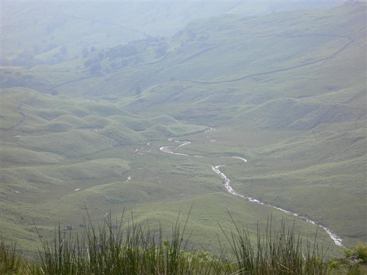
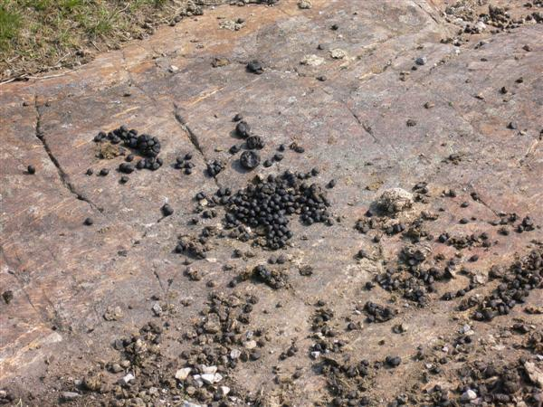
羊糞

羊尾......？
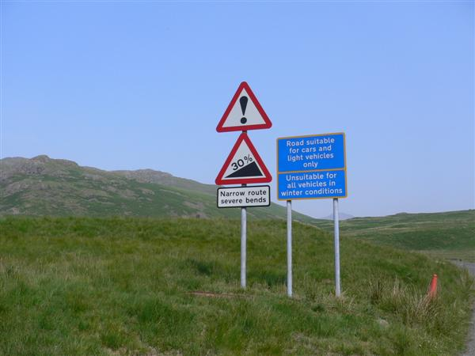
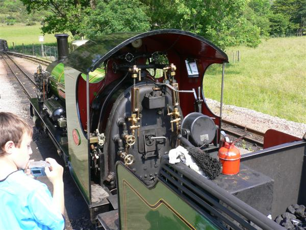
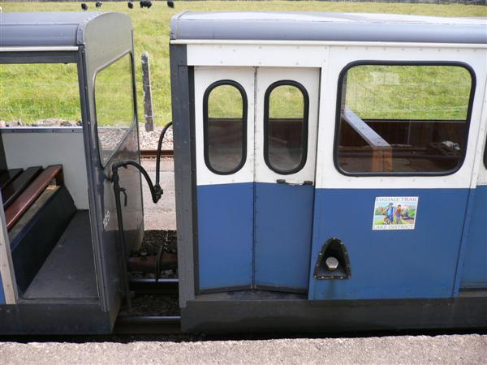
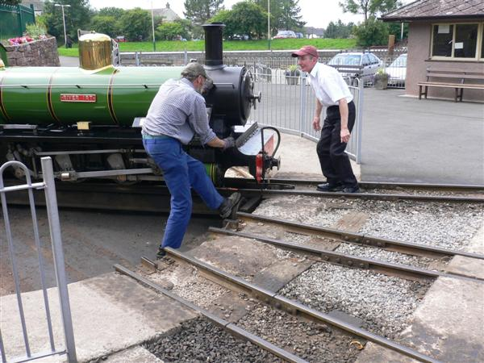
把火車頭掉頭
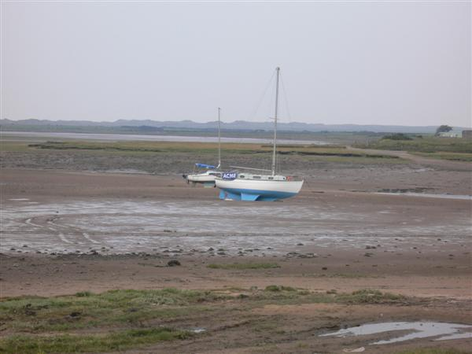
Ravenglass的海邊
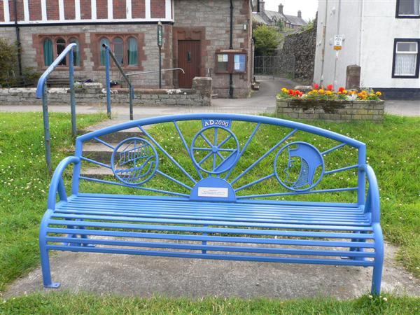
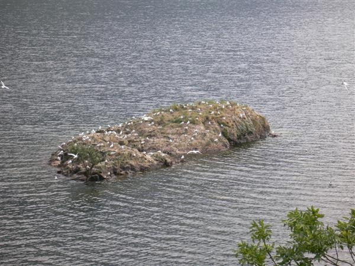
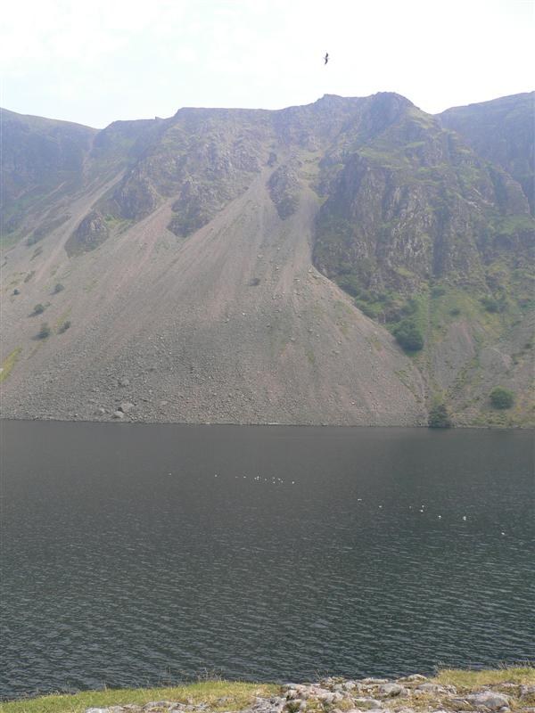
Wast Water
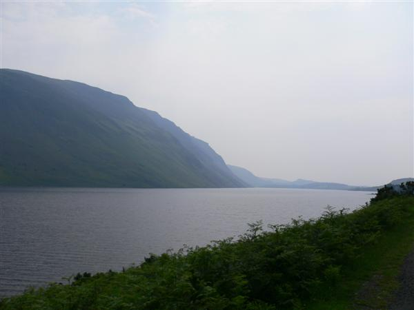
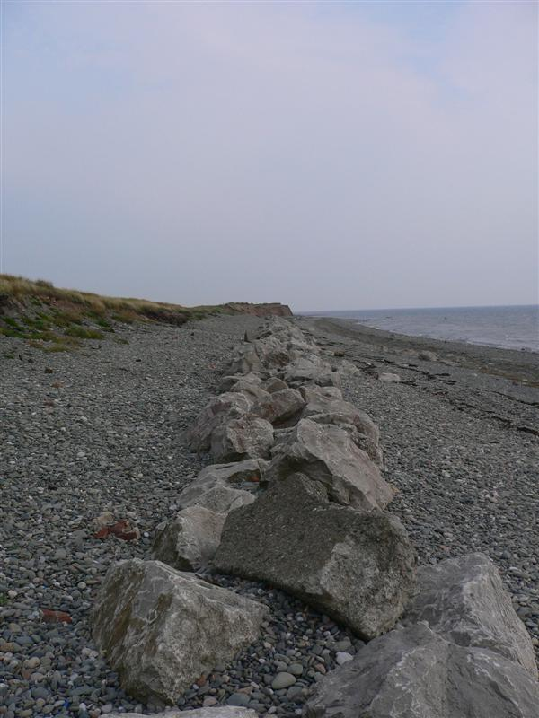
Walney Island南面
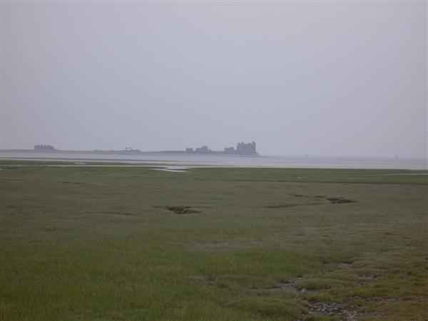
小島Piel Island上的城堡
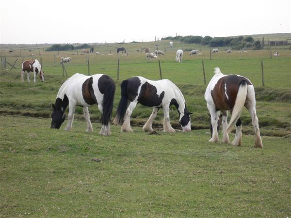
黑白啡色的馬
七月三日 晴
Shakespeare's birthplace
又是陽光好強的一天，聽說天氣反常，很多天沒下雨，再不下雨就要水荒了。
早上離開湖區，經過十分之長的車程，到Stratford-in-Avon，已是下午。
參觀莎士比亞的出生地，小時候的屋。展覽主要說莎士比亞的父母什麼出身，他在哪裡讀書，長大後買賣了什麼屋，和誰結婚，有什麼後代。
在那間小屋裡，有些職員講解，有一個很友善和耐心地講解，有一個則在和別人取笑當時一班很沖忙地參觀的日本團。
又是很長的車程，回Birmingham老張的家了，聊了一陣，便準備第二天離開。
好吃的english breakfast

莎士比亞出生地
七月四日 晴
eurostar，Paris，Tower Eiffel
今天，老張車我到火車站，別後，起程去巴黎了。乘火車回到London，己是中午，在Waterloo火車站，吃點東西，個Jam
Doughnut好好味。等上eurostar。
第一次由英國去法國，想試下eurostar，子彈火車，是否好快的呢？想不到，第一次坐，便有問題，行駛不夠三十分鐘就停了下來，車長說，有技術問題，過了差不多十幾二十分鐘，開車了，滿心歡喜，怎料阿車長話，由於什麼問題，所以要慢駛還是行第二條路，要遲兩小時才到達！
死人eurostar俾佐個backward位我我已經覺得好慘，佢而家仲要遲兩個鐘。坐了兩個幾鐘已感覺想死，去出口的間隔透透氣，發覺那裡有幾張小椅，我便在那裡坐了下來，雖然不舒適，但起碼forward，隔離還有一大隻窗。就在那裡，過餘下的兩小時……這段時間，外面在閃電和下雨。
將近到巴黎了，車長說，送我們免費單程或半價來回票。心想，手頭上的那張回程票，回到London再去機場時間不是很鬆動，若果又再有問題的話……所以便用了這個免費票，取過一張早點班次的票。
當地的地鐵叫Metro，和倫敦的Tube一樣，有很清楚的指示，又不會像倫敦的有些月台是幾條線共用。很快便到達目的地。不過，找旅舍有點困難。
想回去Metro站看街道圖，有個太太以為我要坐車，告訴我這裡是出口，入口在另一個地方。我便說 (其實是指手劃腳)
我要到某條街，多得她，我才很快便找到。到達宿舍，已是晚上九時了，天未黑，便去Tower Eiffel。
由Metro站行去鐵塔途中，有很多人一起同行，我想這也是個看夜景的好時候，去到看見有很多人。可以選乘升降機上或行上去，有點累，想乘升降機，但好鬼死多人排隊，還是行了上去算。行到第二層，不想再上去了，就在這裡看夜景吧。
回到旅舍，差不多十二時，房內已有一位朋友，他是從Hungary來這裡開會的。
意料之外，這間四人房，比倫敦那間的大，而且還有桌和椅。執行李不用那麼辛苦了，但有一樣不好，就是一間房只有一條匙，最後離開的人負責交還，更麻煩的是，房門是關了便一定要用匙從外面開的，所以我們索性搵舊野頂住佢算。
其餘兩位同房還未返歸，我們睡了，半夜下大雨，由於是在屋頂，聽到雨點打在天窗的聲音，特別響亮。
eurostar
七月五日 晴
Notre Dame in Paris，Louvre Museum，Before Sunset，World Cup
天亮，已沒有下雨。其餘兩位同房還未起床。
吃過早餐，先到Gare
Montparnasse買往Rennes的火車票，個售票員只懂很少英語，我就更是不懂法語，只用紙筆寫下班次和價錢等來溝通。售票員小姐好搞笑，按電腦按到一半好像有事，她按來按去都不知發生什麼事，在大叫，好像快要暴走似的，但又不斷向我說OK。我差點由微笑變了做大笑。
到可以了，又說什麼什麼，完全不懂她說什麼，應是沒有一樣東西的意思，沒有位？，又不是。她身後的上司呼喝她，意思像是：是但啦。結果也買到了，太遲買，沒有advance
ticket，正價票，十分貴，但也沒法。
接著去巴黎聖母院，不知為何，Cite站不上落客，於是便由St Michel站行過去，原來都好近，還可以由遠處看。Notre
Dame沒想像中大，在內行了一會，想找上塔的入口，原來在出面，條人龍好鬼死長，結果沒上去。
行去Louvre
Museum，已經有很多人排隊，原來只是等過檢查隨身物的關卡，入到去又要再排過。一開始入到去的地方，是全個博物館的中心地，十分之多人，太多人了。取過地圖，不知從那裡開始看好，便從一定會有好多人圍住的Mona
Lisa那個區域開始。
好大的博物館，行了六個多小時，中途吃點東西，腳都累死了，但其實都未行完。展品的標籤沒有英文，只有著名的才有，已經很多是走馬看花的了。由於太多人，有些地方充斥著導賞團的人，十分之擠迫，沒有心情再逗留。
出到來，已經是就來黃昏的時候。
電影Before Sunset中男女主角於一間書店重逢，然後在日落前行公園，喝咖啡，乘塞納河的遊船。那間書店，便是位於聖母院對面的Left
Bank，叫做Shakespeare & Company
Bookshop。店內有很多書，很細小的地方，有人在讀書，真的是讀出聲的讀。門外有些舊書賣。而公園，不知道是否就是隔一條馬路的那個小公園。Cafe，則不是在附近，而是在Rue
Jean Mace，坐Metro去到Charonne站出去，找了好一會兒才找到，叫做Le Pure
Cafe。劇中男女可能在這麼短時間內行到去嗎？
巴黎給我印像比較差，Metro站內，有老鼠，地面上，好像只要有沙的地方，便有尿味。連聖母院周圍的沙地和羅浮宮博物館外面也不例外。
在巴黎的街道隨處逛，看看周圍的環境，吃點東西，便回去旅舍，和還未互相認識的兩位同房見面了，他們倆是來自Texas的，其中一個父母是台灣人，懂得說普通話。
這夜是世界杯法國對葡萄牙，法國勝出進入final了，整晚街上都十分嘈，歡呼，唱歌，奏樂，開車響horn。
St-Michel
Notre Dame
塞納河
Le Pure Cafe
上映的電影
七月六日 晴
凱旋門，Mont-Saint-Michel
很好運，又是起床前停雨。早餐，又是那些，又是那條硬包，心中有點抱怨。而匈牙利同房，就把什麼都吃完，連果醬和牛油，都清得乾乾淨淨。
早上去凱旋門，登上門頂，可以從高處看四周，這是第一次從高處看日景，看見下面的交通警在指揮交通，看見那條香榭麗舍大道，見到鐵塔，羅浮宮，卻見不到塞納河。竟然，我這裡一看便看到中午，往Rennes的火車開二時半，這段時間，不知去那裡，便沿著香榭麗舍大道行。
又行回羅浮宮了，又經過那個倒金字塔，仍是十分多人圍著它，難道是在尋找抹大拉的瑪利亞？
到Gare
Montparnasse，準備上火車，指示牌上兩班車說都在同一個月台，一樣是去Rennes〈事後才知道，是同一列車，但有兩個號碼〉，不過當時問一個老婆婆我是否上這班，她點頭，還帶我去，我們完全言語不通，她指著我的票說一些東西，我看，原來是沒有坐位編號的，我還以為上不了車，原來，是沒有座位的票。這時，我才知道，原來昨天售票員小姐說的就是這事。
沒位坐，其實不然，只是坐在那些出入口旁的椅子，即是我在eurostar坐得仲happy過正常座位那種。
這是TGV高速火車，終於感受到它的速度了，很快，看出窗，近的東西十分快地閃過，耳仔初時還有點塞。
兩小時後到達Rennes，跟著旅遊書的資料，走去南面出口，找那個有車到Mont-Saint-Michel的車站，但找不到，很擔心，回火車站的詢問處，打開本書指著，說我想去這個地方，職員說：你太遲了。
下。太遲？？沒車到了？？原來他以為我即日來回，問我拿來回車票看過後，即時找資料，把巴士班次印出來，又說我的回程火車票太早，叫我快點去換過某個時間以後的票，真好人。
原來有個車站在北面出口，在那裡乘坐六時三十分的旅遊巴士，一個多小時後，從遠處看見那個我很想去的小山了。
到達正門，看看那個巴士時間表，原來更新日期是七月，難道它的時間表常常轉的？入去即時找酒店房，一間滿了，兩間又滿了，心諗唔通我今次真係要訓街…好在，終於有房。有兩個剛才同車的人也是即時找地方住的，不知他們找到沒。
八時多，天還未黑，在一間向海的餐廳吃飯。沒有英文菜單，侍應和一個類似老闆的人也不懂說英文。拿著本英法常用字對照小書，啊，這個是魚，這個是肉，這個是飲品，這個是湯。對到頭暈，好難對，結果點了兩個好像是推介的東西。
其中一個，竟然是我不吃的羊肉，幸好，沒有酥味，幾好吃。
天開始昏暗，走出城，一直慢慢地出去遠處的地方，見到那裡河口正在建一個堤壩，要來做什麼的呢？回頭行，終於天黑，看著Mont-Saint-Michel黑夜時的模樣。
永恆的火和無名軍人的墓
新凱旋門
Mont Saint-Michel
七月七日 雨
Mont-Saint-Michel，Pontarson
昨晚夜睡 這天打算睡多點，把窗簾關好，真的沒有很早便醒了。吃飽早餐後便開始遊這座山城。想不到，下微雨，我也算很幸運，十多天的旅程，才是第二天有雨。
這裡只有一條正式的街道，只要一直往上行，便能到山上的修道院。
街的兩旁都是商店和食店，一早便十分多人。很快便行完，進入修道院。
拿著一張導遊小單張，一間一間室地遊，原來這裡曾用來做監獄的。不過內裡十室九空，沒有什麼留下來。這裡亦是有幾班參觀團，所以十分多人。有個迴廊，想不到都有那異味，究竟是什回事呢……修道院也有座高塔，可是上塔的門關了。
院內還有一個介紹修復工程的展覽，看過後，便明白為何要在河口建霸了。
參觀完修道院，在城內逛逛餘下的部分，便去查查往Pontarson的巴士的時間表，然後又再一直行去河口那個地方，回望Mt St Michel。
這次到來，是有點失望的，雖然不是潮漲期，但也沒想到，會是一大片沙地，和想像中，四周是水，只有一條可能會被淹沒的路，像一座浮在水上的城，有很大出入。看展覽的小冊子知道，原來由於河水不夠力，沙積得越來越多，已很難出現以前的樣子，所以便有這個工程，希望2012年可回復舊貌。到時，我會否再來呢？
下午，到Pontarson等火車回Rennes。Pontarson是個很小的鎮，逛不了多久，還要開始下大雨，便到火車站月台坐著等。
想不到，這班火車車廂內十分先進和舒適，有普通的座位，也有梳化，連出入口的空間都寛闊過人。再回巴黎，已是夜晚，回到旅舍，同房們說昨晚見不到我有點擔心。
迴廊
Pontarson
小小的火車站
TGV
七月八日 晴
最後一天
Texas的兩位同房，也是今天到倫敦，不過要早點走。Hungary的同房則搬到另一間房，道別後，執拾一下，也離開這裡了。
然後，就是漫長的一天。到北火車站，坐eurostar。今次很好，坐位好，又快，沒有延誤，所以，早了到機場，唯有等呀等。好不容易等到上機。天意弄人，這裡才有延誤，遲了三小時，人都癲。
後記
第一次一個人在途上，感覺好興奮，整個旅程都好開心。尤其是，遇到的人都好好，不同種族的人都生活在一起，在街上，在地鐵中，在什麼地方，和陌生人都可以互相hi一餐，笑一餐。
tube和metro，車快開快停，門快開快關，很爽快。雖然比較細，但卻沒有擠迫的感覺，遇不到別人未下車便上車的情況，亦遇不到人衝入去搶位。那些門有個open制，想下車要按制才開門，巴黎的更好玩，車未停定便可開門。
我喜歡倫敦的新和舊融在一起。火車站、博物館和商店，由舊建築改成，或新和舊連著。喜歡巴黎羅浮宮博物館的地下古蹟和現代商店是那麼接近。
我很掛念這兩個地方，在旅舍遇到的人，有時會想，不知他們面試如何，會議如何，往後的旅程是否平安。
巴黎北火車站

DIY Check In, 很方便
TUBE 行人隊道
在倫敦TUBE轉站時買的CD
梗有一隻O係左近
tube不同的站內有不同圖案
Condom也是紀念品
車廂開門按鈕
倫敦地面地下都有這些CCTV的攝影機，安全了，但城市人的行動都被人監視著般。
Metro的行人隧道
有不同的車輪
Metro的開門把手